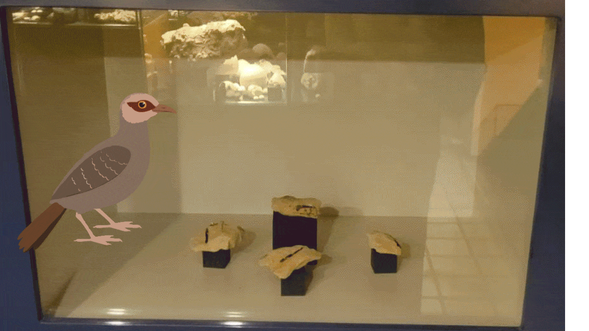

Museumproject
Voor het Natuurhistorisch Museum Maastricht heb ik samen met een groep een interactieve installatie ontwikkeld. Het hoofddoel van het project was om informatie over een vogelschedel op een leuke en toegankelijke manier over te brengen aan museumbezoekers.

Binnen dit project was ik verantwoordelijk voor het 3D-modelleren van de fossielen en het animeren van deze 3D-objecten. Daarnaast heb ik ook een 2D-animatie gemaakt waarbij ik gebruik heb gemaakt van rigging. Verder heb ik bijgedragen aan het algemene design van de installatie.